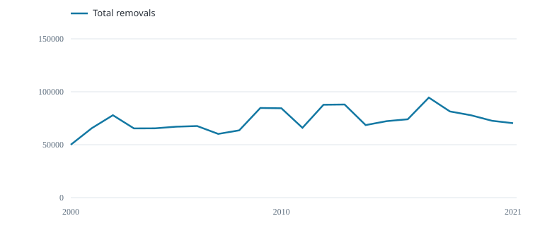

639 records · 79 cell–quarter strata · 2000–2021.

Total annual catch (tonnes)
Annual removals are saved separately from catch numbers in the CPUE rows.
Sample of annual coverage
| Year | Records | Hooks | Fish (number) | Total catch (t) |
|---|---|---|---|---|
| 2000 | 15 | 17411790 | 308821 | 49980 |
| 2001 | 18 | 24628386 | 420309 | 65636 |
| 2002 | 24 | 29038337 | 434332 | 77856 |
| 2003 | 23 | 33041314 | 361225 | 65395 |
| 2004 | 29 | 46209869 | 634654 | 65470 |
| 2005 | 25 | 39048167 | 665272 | 67016 |